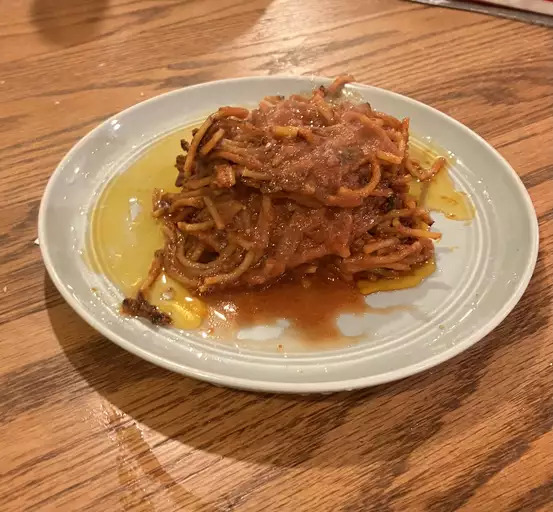

Assassin's Spaghetti

Description
Caramelized tomato sauce makes this a wonderfully savory dish. The
reduction of the tomato broth brings out the sweetness of the tomatoes
which balances well with the spiciness of the chili flakes.
Ingredients
Tomato Broth:
- 1 tbs olive oil
- 2 cloves garlic, minced
- 3 cups tomato puree
- 3 cups water
- 1 tbs salt, or to taste
Assassin's Spaghetti:
- 1/4 cup olive oil
- 2 ts red chili flakes, or to taste
- 6 oz dry spaghetti
- salt to taste
- 1 tbs finely chopped parsley, for garnish
Steps
-
Heat olive oil in a pot over medium heat. Add garlic and sizzle until it
starts to turn golden and fragrant, about 1 minute. Stir in tomato
puree, water, and salt. Bring to a simmer on medium-high. Once
simmering, reduce to low heat and keep warm.
-
Pour olive oil into a large non-stick skillet over medium-high heat,
season with chili flakes and heat until chili flakes start to sizzle,
for 1 minute. Add raw spaghetti and toss until well coated with chili
oil. Pour in about 3 cups of tomato broth and, using tongs, move pasta
from side to side to evenly distribute tomato broth. Cook, occasionally
moving pasta from side to side with tongs, all facing the same
direction, until most of the broth has been absorbed or evaporated, and
the spaghetti starts frying in the pan.
-
Turn spaghetti over with tongs, and evenly arrange in the pan. Keep
cooking until the pasta starts to brown, and even lightly chars. Add
about 2 more cups of tomato broth, and repeat the process. Continue
cooking until the spaghetti is as charred as you like , and cooked to
your desired doneness.
-
More broth can be added at the end of the process for a saucier version,
as shown in the video, or it can be served relatively dry.
-
Serve with a drizzle of olive oil and more chili flakes if desired.
Go back